Project 3: (Auto)stitching and Photo Mosaics
Project 3A: Image Warping and Mosaicing!
Part A.1 – Shoot and Digitize Pictures
For this project, I captured several sets of overlapping photos to eventually blend into one larger panoramic photo.
To take my photos, I fixed the center of projection of the images (COP) by placing my phone camera on a flat surface and rotating the phone as I took photos and ensured that the photos had ~50-60% of overlap, both of which will help me when choosing correspondence points later in the project.
Below are two examples of image sets:
Lab Photos
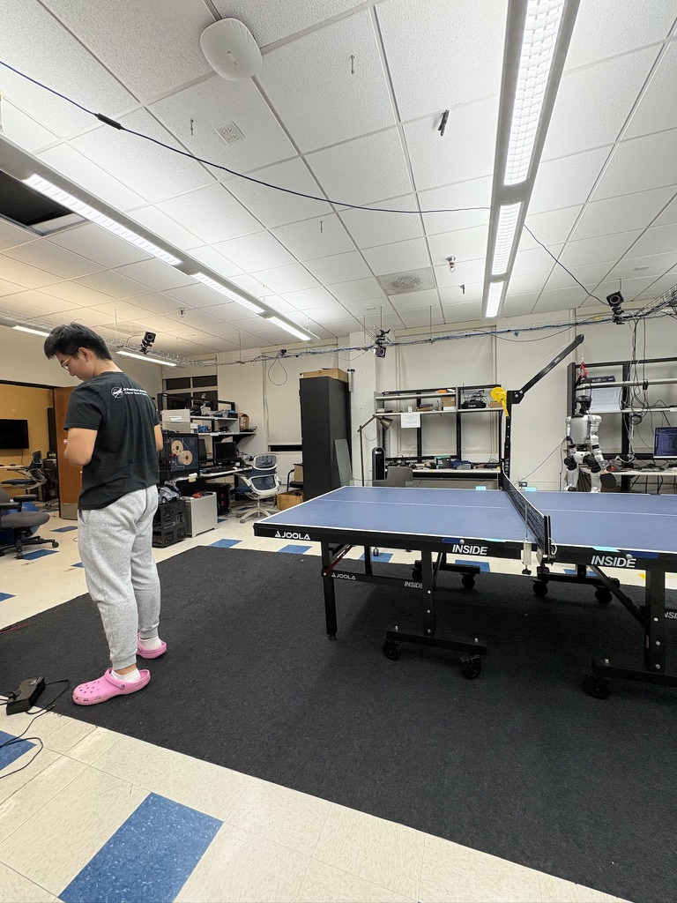
Center Image
Hirono Photos
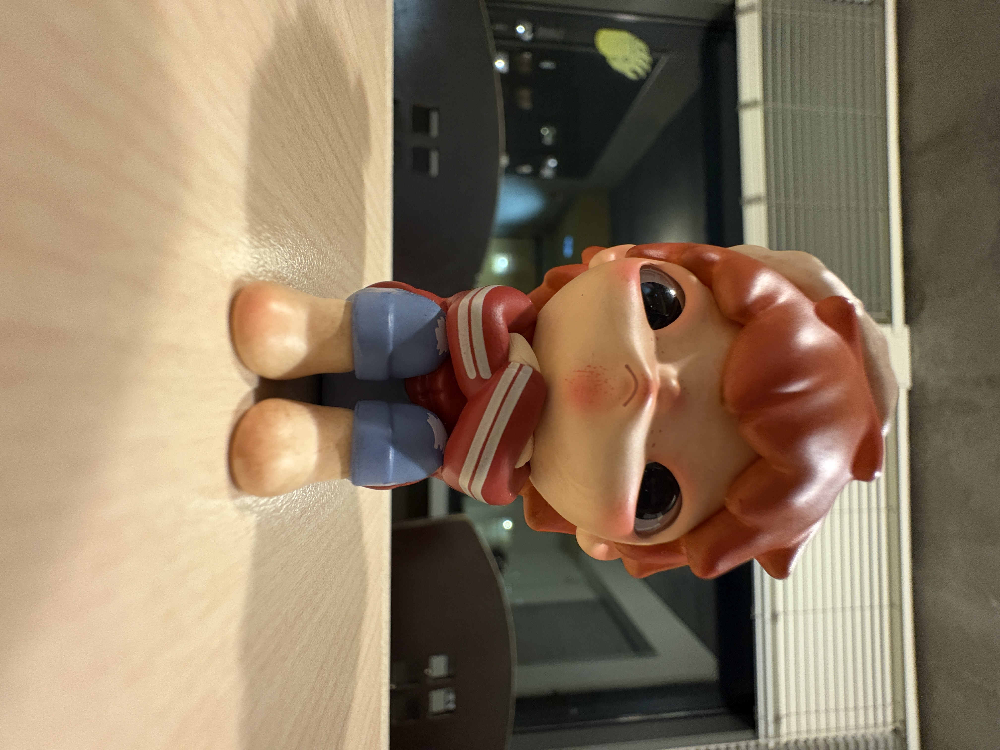
Center Image
Part A.2 – Recover Homographies
To align the images, I implemented the function
computeH(im1_pts, im2_pts) which recovers the homography given a set of corresponding points taken from two images. A
homography is a matrix that represents a projective transformation, and maps points from one image to a second image.
To choose my points, I used
pixspy.com and uploaded all three images. When choosing my points, I tried to select distinguishable features (such as corners of furniture) as well as features that appear in all three images.
computeH(im1_pts, im2_pts) makes a system of linear equations of the form Ah = b, where h represents the unknown transformation parameters.
The transformation equation I used is p'=Hp, where H is a 3x3 matrix with 8 degrees of freedom (8 unknown values). For each set of correspondence points, the linear system of eqations is:
[-x, -y, -1, 0, 0, 0, x*x', y*y'] * h = -x'
[ 0, 0, 0, -x, -y, -1, x*y', y*y'] * h = -y'
This equation gives us
2*n equations for
n correspondence points. To ensure stability, I chose >4 points per image set, and solved the over determined system using least squares, where
h = (ATA)-1ATb.
Below you can see the correspondence points I chose for my lab photos visualized on each image.
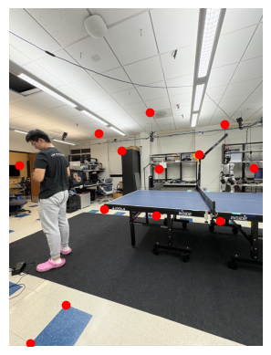
Center Image
Part A.3 – Warp the Images
Before I could blend the images, I needed to use the homographies (found in the previous section) to warp each image to align with the reference (or center) image.
To warp the images, I implemented two interpolation methods: Nearest Neighbor Interpolation and Bilinear Interpolation.
Nearest Neighbor Interpolation is when each destination pixel samples the color of the nearest projected source pixel. This method is quicker than bilinear interpolation fast but creates jagged edges. With
Bilinear Interpolation each destination pixel value is computed as a weighted average of its four neighboring pixels in the source image. Similar to a guassian filter, this averaging creates smoother results. However, compared to nearest neighbor interpolation, its more computationally expensive and takes longer to run.
To test my implementations I did two tests. The first was performing
"rectification" on images. This means, I used the recovered homography to take images that have warped perspectives of known rectanglular objects in them (such as TV screens, posters, and tables) and make the objects appear rectangular again. Below are some examples of rectification using my implementation:
The second was overlaying the computed homography points of the transformed image on to the points in the destination image. Some of the results of my function can be found below:
Part A.4 – Blend the Images into a Mosaic
Finally, I created mosaics of the images!!
After warping the images, I blended them together. I did this by keeping the center image static and inverse-warped the left and right images to it. From there, I used weighted feather masks to remove seams in the areas where the images overlapped.
Explicitly, the steps were as follows:
- Shoot a set of 3 images while maintaining the same Center of Projection (COP)
- Manually select correspondence points in the image (I used pixspy.com)
- Recover the transformation homography (and check that the points properly align)
- Warp the left and right images
- Merge the left and right images to the center image
Below are three of my final mosaics:
Lab Photos
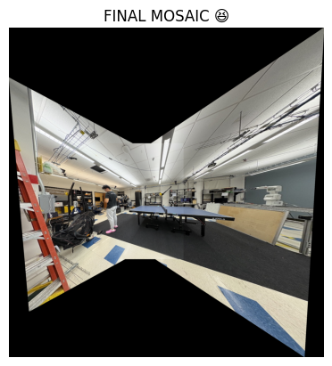
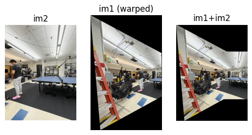
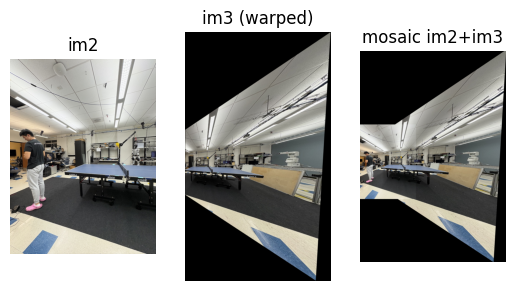
Grimes Photos
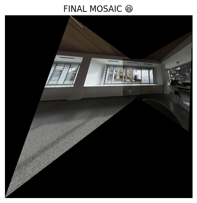
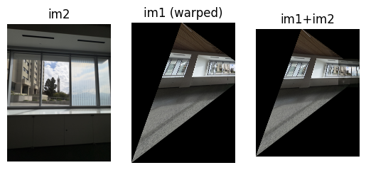
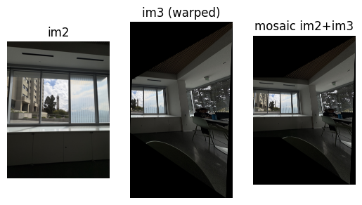
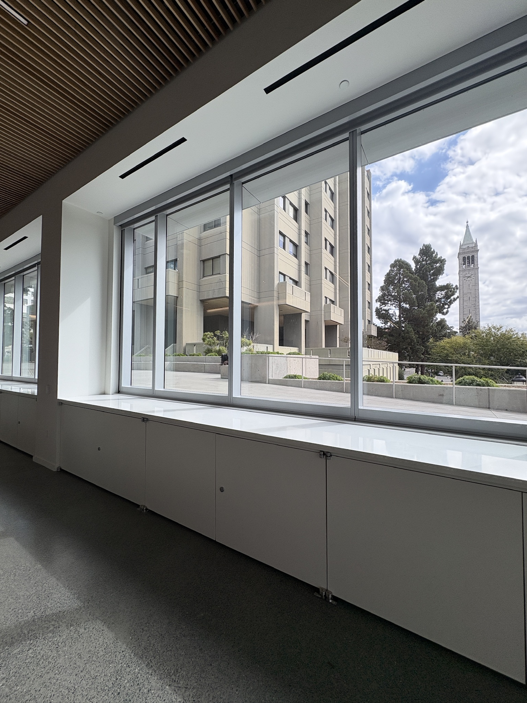
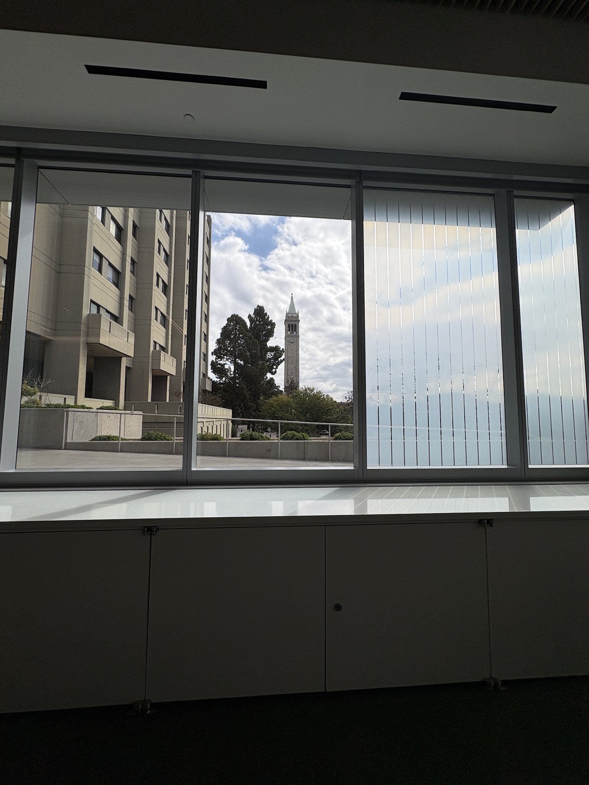
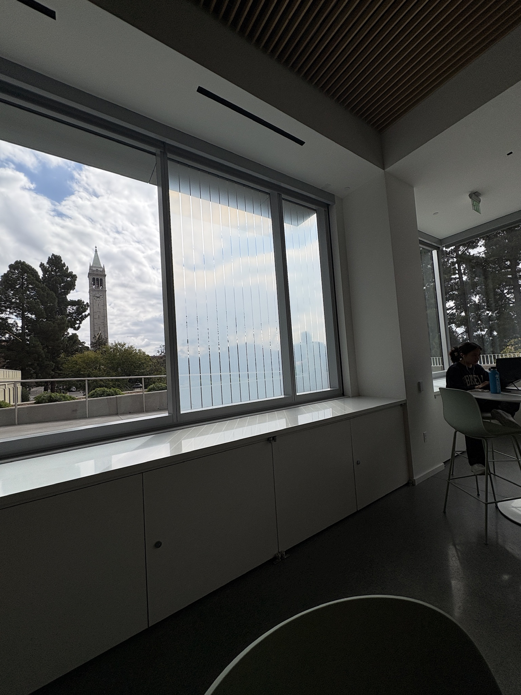
Bookcase Photos
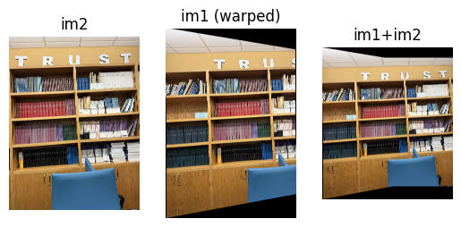
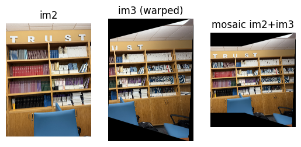
Project 3B: Feature Matching for Autostitching
In part A, I manually selected points to be used to compute homographies. In this part, I created functions for automatic stitching following the paper “Multi-Image Matching using Multi-Scale Oriented Patches” by Brown et al.
Part B.1 – Harris Corner Detection
Harris Corner Detection Algorithm
To start, I used the Harris Corner Detection to find corners within the images. I largely used CS180 starter code (
here), with a few tweaks to the thresholding.
Harris Corner Detection measures how much the image intensity changes within a small window of the images. Each point in the image is given a "harris strenth". The larger the harris strength value, the stronger and more pronounced a point is compared to the points in the surrounding window.
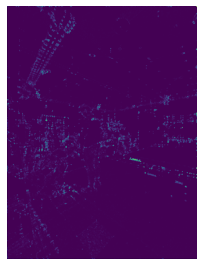
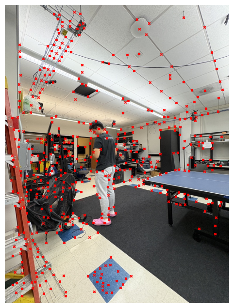
Adaptive Non-Maximal Suppression (ANMS)
To enhance the selected points of interest, and get a more evenly distributed map of interest points, I implemented Adaptive Non-Maximal Suppression (ANMS), which works as follows:
- Given Harris coordinates and response values, sort corners in descending order by Harris response values/strength
- For each corner, compute the minimum distance to a corner with a significantly stronger Harris response. "Significantly stronger" is based on the equation f(x) < c * f(x)
- Select the top n corners with the largest suppression radii
By following this implementation, this ensures that the selected points are more evenly distributed across the image.
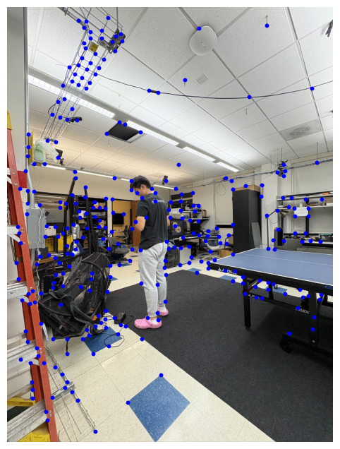
Part B.2 – Feature Descriptor Extraction
After selecting interest points, I thien created descriptors for the local appearance around the points, allowing me to later match corresponding points between images.
My approach was as follows:
- Take a 40x40 area/patch centered at each interest point
- Apply a low-pass gaussian filter to remove excess noise and reduce aliasing
- Downsample the patch, with a spacing of 5px, to 8x8
- Flatten the 8x8 patch to a 64-dimensional feature vector
- Normalize the descriptors using the following equation: (vector - vector_mean) / vector_stdev
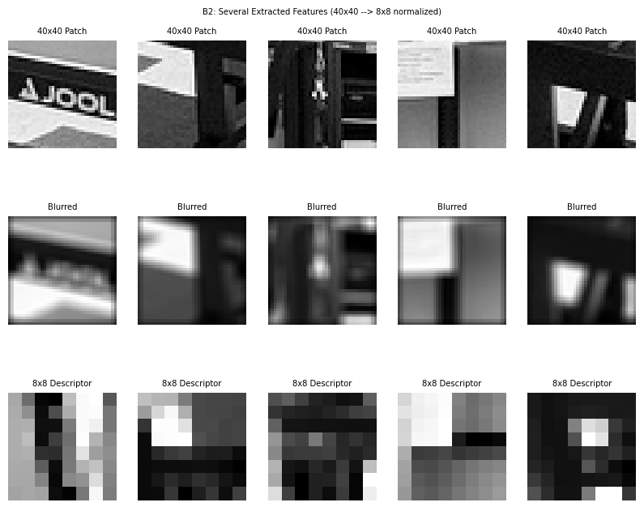
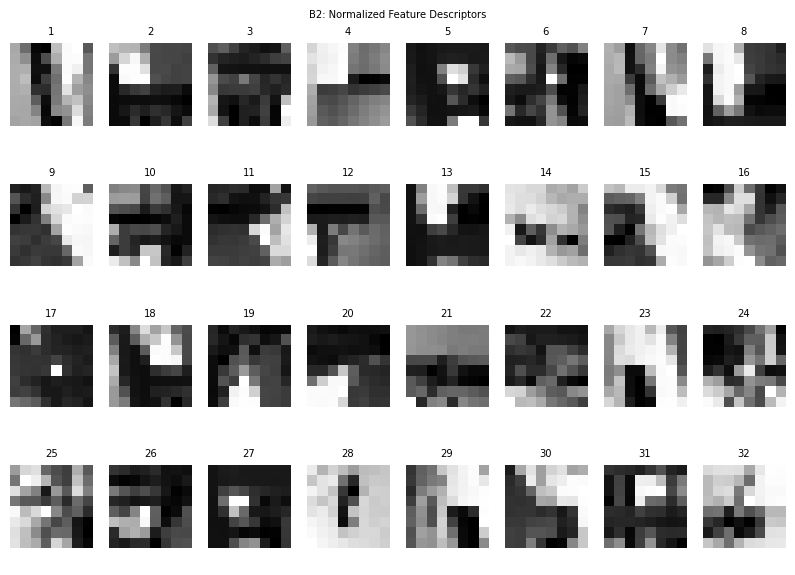
Part B.3 – Feature Matching
Next, I found correspondences by taking the descriptors of multiple images and pairing ones that were similar using Nearest Neighbor and Lowe's ratio test. Lowe's ratio test compares the distance to a points first nearest neighbor to it's second nearest neighbor, with a small ratio being indiciative of a reliable match.
My approach was as follows:
- Compute euclidean distance between all descriptor pairs from images 1 and 2. (I used the dist2 function provided in the harris.py file and took the square root of the result)
- For each descriptor in image 1, I sorted the image 2 descriptors by their distance from the image 1 descriptor. Then identified the two nearest neighbors (NN1, NN2)
- Apply Lowe's ratio test by accepting the match IFF sqrt(descriptor1/descriptor2) < threshold
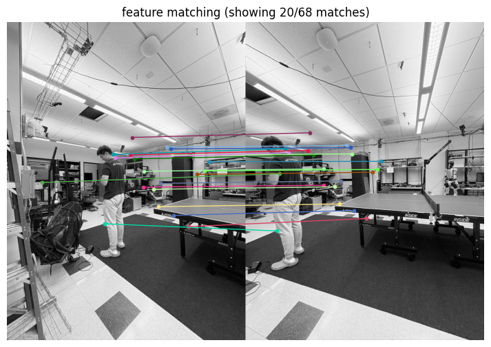
Part B.4 – RANSAC for Robust Homography
Even after careful matching, some incorrect feature matches will remain. Random Sample Consensus (RANSAC) allows us to estimate the homography while ignoring outliers.
The 4-point RANSAC Algorithm works as follows:
- Randomly select 4 matched points
- Compute the homography
- Compute inliers, which are the matches that transform within a small error
- Repeat in a loop until you find the homography with the most inliers
Analysis and Comparison
Visually, compared to the manual stitching from part A, the automatic stitching are mostly indistinguishable to my eye. However, I feel that for my lab images (shown below) the RANSAC approach created a more seamless mosaic, and showed less of the borders between the images.
As for implementation, the automatic stitching approach was far cleaner. For manual point selection, I had a lot of difficulty selecting points, as I spent a lot of time zooming in on my photos (to the pixel level) to select my points. The automatic point selection and stitching was also significantly faster and more consistent than the time it took me to manually select and match points.
Below are comparisons between the manual mosaicing from Part A and the RANSAC Mosaicing.
Bookcase Mosaics
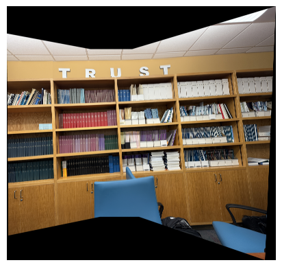
RANSAC Stitching
Lab Mosaics
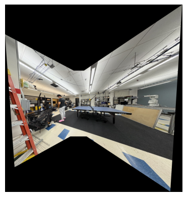
RANSAC Stitching
Grimes Mosaics
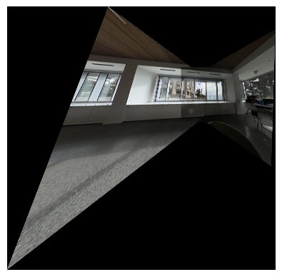
RANSAC Stitching